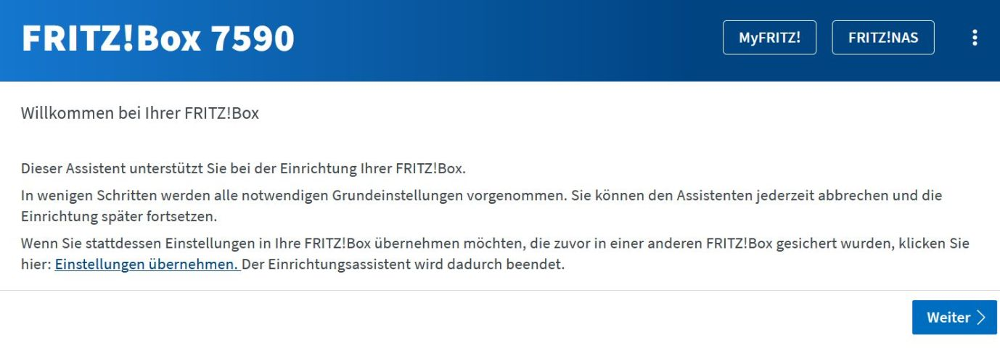
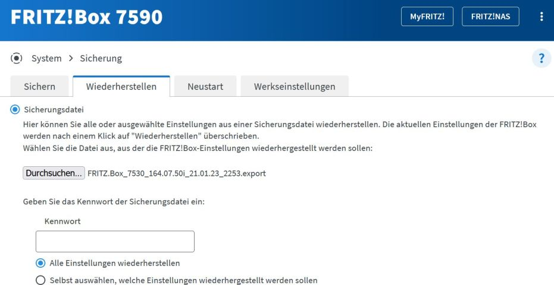
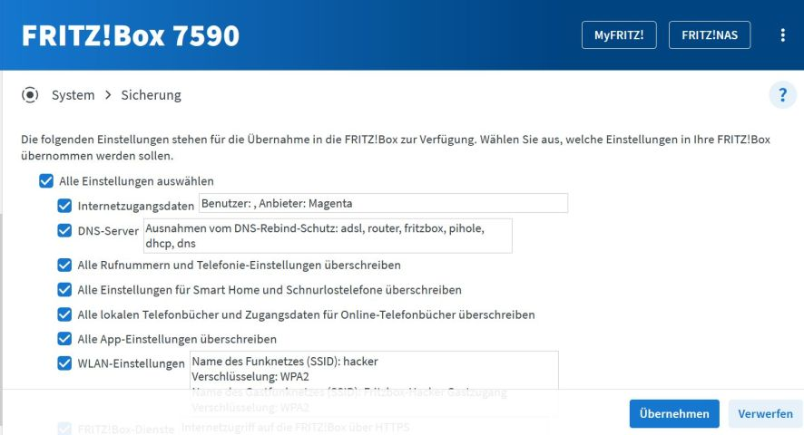

Ich habe Internet Fix auf DSL Basis und von Magenta eine Fritzbox 7530 als Router. Bin eigentlich sehr zufrieden damit ( bis auf die Software Version, jetzt ist eigentlich 7.50 aktuell). Ich habe mir vor einiger Zeit eine Fritzbox 7590 besorgt und habe diese ins Netz gehängt. Im Zusammenhang mit den hohen Strompreisen wollte ich Strom sparen und die 7590 statt der Magenta 7530 gleich an die DSL Leitung hängen. Ich habe daher wie auf der AVL Homepage beschrieben die Konfiguration der 7530 gesichert und dann auf der 7590 importiert und diese dann an die DSL Leitung gehängt. Laut AVM sollte das so funktionieren. Hat aber leider nicht geklappt, bekam keine Verbindung.
Ich habe dann bei der Hotline angerufen. Dort sagte man mir, dass fremde Fritzboxen nicht zugelassen werden.
Kann mir jemand erklären, warum Magenta das verhindert ? Wollen sie ihre Hotline vor Überlastung schützen ? Gibt es andere, technische Gründe ?
Ich kann natürlich meine eigene 7590 weiter im LAN wie bisher betreiben. Aber selbst wenn sie nur 10 Watt verbraucht, sind das im Jahr 90 kW und bei derzeitigen Strompreisen 20-50 € mehr. Hat jemand einen Rat ? Geht das gar nicht ? Oder gibt es wie beim Software-Upgrade einen Trick ?
Maverick
@hackerd
, da hat dir wohl AVM einen "Bären" aufgebunden, den die Fritzbox 7590 und 7530 haben unterschiedliche Konfigurationen, das kann einfach nicht klappen.
Ob deine Eigene Fritzbox 7590 (mit AX Wifi 6, oder Ohne) für den Österreichischen Markt zugelassen ist, sollte erkennbar sein an der Bezeichnung "
AT/CH
" für Österreich/Schweiz oder "Int" für International.
Auch wenn die Soft/Firmware nun für AT/CH, Int und DE identisch sind, so ist dennoch ein Unterschied in der Konfiguration.
Wenn deine "Box" eine AT/CH oder "International" ist, schaue mal im Fritzbox Interface nach ob du eine Dienstanbieterliste siehst, den der Mitstreiter A1 ist darin gelistet und lässt sich auch auswählen und nutzen.
Ob Magenta AT da auch schon gelistet ist, müsste auch in dieser Liste ersichtlich sein, und wenn ja, einfach den Anbieter auswählen.
PS: Magenta AT hat allerdings noch keine Eigene Infrastruktur für DSL Anschlüsse, und nutzt derzeit wohl diese von Mitstreiter A1.
Hoffe du kannst mit dieser Info was anfangen.
Der Anschluss müsste bei dir auch so aussehen, wie auf dem Bild.
DIe 7590 hat aufgedruckt Edition A/CH. Ich habe für meine 7590 einen Factory reset gemacht und es nochmal probiert.
Ich habe die 7590 auf Deutsch und Österreich konfiguriert und dann bei der Internet-Einrichtung "Magenta" ausgewählt.
( Bei der Magente 7530 ist auch als Anbieter "Magenta" ausgewählt ).
Ich habe das Anschlusskabel von der 7530 auf die 7590 umgesteckt. Obwohl die DSL-Verbindung stabil und ohne Probleme mit derselben Datenrate von 40 Megabit läuft, kommt keine Internet Verbindung zu Magenta zustande.
Im Ereignismonitor der 7590 finde ich:
"DSL ist verfügbar.(DSL-Synchronisierung besteht mit 39725/9441 kbit/s)".
"Internetverbindung ist fehlgeschlagen: Fehlergrund:2 (DHCPv4 no Answer on Discover)".
Auf der 7530 kommt an dieser Stelle stattdessen "Internetverbindung ist hergestellt.."
Also scheint Magenta doch die Verbindung mit "fremden" Fritzboxen abzulehnen.
@hackerd
, du schreibst, dass die Fritzbox 7590 eine AT/CH ist und demnach für den Österreichischen Markt zugelassen ist.
Dann sollte schon die 7590 dafür vor konfiguriert sein, und für die Österreichischen Betreiber auch nutzbar sein.
Wichtig allerdings ist dabei, dass du nicht die Deutsche Konfiguration nimmst, da auch darin wohl Magenta gelistet ist, die im Österreichischen Netz nicht funktioniert.
Stelle mal die 7590 auf die Österreichische vor Konfiguration, und wähle darin aus der Liste den "Magenta" aus falls in dieser Liste auch A1 gelistet ist.
Den dann sollte es sich um die Konfiguration von Magenta AT handeln, und auch anwendbar sein.
Nur als Hinweis!
Wie schon auch erwähnt, nutzt Magenta AT zur Zeit die Infrastruktur vom Mitstreiter A1, da kann es auch schon mal sein, dass eine Fritzbox sich nicht konfigurieren lassen.
Verkabelung!
Nachdem die Fritzbox 7590 eine AT/CH ist, sollte diese auch im Netz von Magenta möglich sein falls in der Liste aus wählbar. aber nutze die Verbindungskabel die der 7590 beigelegt sind.
Den im unteren Bild weist der Hinweis darin auf, dass eine Falsche Verkabelung genutzt wurde.
Bei dieser Box ist auch ein Ypsilon Kabel (Grau/Grün) bei gelegt, wenn ja, stecke nur den Grauen Teil in die Richtige Buchse der Fritzbox 7590 und lasse den Grünen weg, oder direkt mit dem Schwarzen Kabel von der Dose weg.
@hackerd
, du schreibst, dass die Fritzbox 7590 eine AT/CH ist und demnach für den Österreichischen Markt zugelassen ist.
Dann sollte schon die 7590 dafür vor konfiguriert sein, und für die Österreichischen Betreiber auch nutzbar sein.
Wichtig allerdings ist dabei, dass du nicht die Deutsche Konfiguration nimmst, da auch darin wohl Magenta gelistet ist, die im Österreichischen Netz nicht funktioniert.Stelle mal die 7590 auf die Österreichische vor Konfiguration, und wähle darin aus der Liste den "Magenta" aus falls in dieser Liste auch A1 gelistet ist.
Den dann sollte es sich um die Konfiguration von Magenta AT handeln, und auch anwendbar sein.
Das ist so eingestellt, erneut probiert, auf Werkseinstellungen zurückgesetzt, Deutsch als Sprache, Land Österreich
ausgewählt, dann in der Liste aus A1,drei.at... Magenta ausgewählt: DSL-Verbindung kommt, Internet bleibt tot. Die DSL-Verbindung bis zum Wählamt steht. Die 7590 versucht dann eine Ip-Adresse zu bekommen, aber offenbar antwortet Magenta nicht auf den DHCP request der 7590.
Ich habe danach nochmals meinen ursprünglichen Schritt durchgeführt, nämlich beim Setup anstelle einer Neukonfigurierung die Konfiguration von der Sicherung der 7530 herunterzuladen. Ich habe alle meine Einstellungen der 7530 bis zum letzten Telefonbucheintrag dann auf der 7590, nur auch da funktioniert das Internet nicht.



vor 7 Stunden schrieb Rasputin:
Nur als Hinweis!
Wie schon auch erwähnt, nutzt Magenta AT zur Zeit die Infrastruktur vom Mitstreiter A1, da kann es auch schon mal sein, dass eine Fritzbox sich nicht konfigurieren lassen.
Verkabelung!
Nachdem die Fritzbox 7590 eine AT/CH ist, sollte diese auch im Netz von Magenta möglich sein falls in der Liste aus wählbar. aber nutze die Verbindungskabel die der 7590 beigelegt sind.
Den im unteren Bild weist der Hinweis darin auf, dass eine Falsche Verkabelung genutzt wurde.
DIeser HInweis kommt bei der 7530 auch, nur etwas später. Liegt vermutlich daran, dass im Haus das Kabel über mehrere Dosen läuft, dazwischen Steckverbindungen. Ist aber total irreführend. Ich habe Internet fix 40, DSL wird mit 39800 verbunden, die angeblich 7000 kilobit fehlen mir also nicht. Wäre vermutlich bei höheren Speeds problemetisch.
Bei dieser Box ist auch ein Ypsilon Kabel (Grau/Grün) bei gelegt, wenn ja, stecke nur den Grauen Teil in die Richtige Buchse der Fritzbox 7590 und lasse den Grünen weg, oder direkt mit dem Schwarzen Kabel von der Dose weg.
Lan Kabel von Lan1 zum PC, dass sollte klappen.
Habe ich ausprobiert, aber mit dem Kabel der 7590 bekomme ich gar keine DSL-Verbindung. Mit dem Kabel der 7530 hingegen
steht die DSL-Verbindung sofort, aber das Internet kommt nicht. Es liegt nicht an den Kabeln, ansonsten käme doch überhaupt keine DSL-Verbindung zustande.
DIeser HInweis kommt bei der 7530 auch, nur etwas später. Liegt vermutlich daran, dass im Haus das Kabel über mehrere Dosen läuft, dazwischen Steckverbindungen.
Ist aber total irreführend. Ich habe Internet fix 40, DSL wird mit 39800 verbunden, die angeblich 7000 kilobit fehlen mir also nicht. Wäre vermutlich bei höheren Speeds problemetisch.
Darin könnte es sich Spießen, den wenn sonst alles richtig eingestellt und Konfiguriert wurde, müsste auch eine Internet Verbindung stehen.
FRAGE: Von wem wurden die Mehr Dosen Anschlüsse und Steckverbindungen verlegt, vom Techniker oder eigen Regie?
Da könnte eventuell eine der Dosen falsch oder Fehlerhaft angeschlossen sein, (währe jetzt meine Vermutung).
Da bleibt wohl nur eine Anfrage bei der Technikline 0676 200 7777, ob diese aus der Ferne die Leitungswerte checken könnten.
Kann dir aber nicht berichten, ob dieses Problem auch von der Magenta Technik gelöst werden kann, oder dies doch über A1 läuft.
PS: Die Konfigurationsoptionen wie im Bild mit den Betreibern dargestellt würden passen, da kann es tatsächlich an der Verkabelung liegen.
EDIT: Schaue auch mal unter "Netzwerk" rein wie auf dem Bild, und gehe da auf Status der Verbindung, und was dir da angezeigt wird
Die Kabel wurden 1990 beim Hausbau als Telefonverkabelung installiert und laufen üner einen Verteiler im Keller zu diversen TAED-Dosen in Zimmern inklusive Abzweigung für externe Klingel. Aber es hat nichts mit den Kabeln zu tun, meine Vermutung stimmt, wenn die DSL-Verbindung steht, müsste auch die Internet-Verbindung funktionieren. Magente verhindert die Verbindungsaufnahme.
Ich habe nochmal bei der Technik-Hotline angerufen. Ter Techniker dort hat mir sinngemäss folgendes erklärt: "
Ein fremder Router kann bei uns nicht funktionieren. Alle unsere eigenen Fritzboxen sind in unserer Datenbank eingepflegt, für einen fremden Router gibt es keine Eintragungsmöglichkeit. Deswegen bieten wir auch nicht die Wahlmöglichkeit zwischen eigenem Router und Mietgerät. Wenn ein Gerät, das nicht in unserer Datenbank ist, einen Verbindungsversuch macht, erhält der DHCP-Call des Routers keine IPV4 Internetadresse
."
Schade, dass Magenta dies nicht explizit in den FAQ oder sonstwo ausgeführt hat. Sie und ich hätten uns viel Zeit und Mühe erspart. Nochmals danke für ihre Bemühungen
Bearbeitet
von hackerd
aktualisiert
Maverick
vor 16 Minuten schrieb hackerd:
Ich habe nochmal bei der Technik-Hotline angerufen. Ter Techniker dort hat mir sinngemäss folgendes erklärt: "
Ein fremder Router kann bei uns nicht funktionieren. Alle unsere eigenen Fritzboxen sind in unserer Datenbank eingepflegt, für einen fremden Router gibt es keine Eintragungsmöglichkeit. Deswegen bieten wir auch nicht die Wahlmöglichkeit zwischen eigenem Router und Mietgerät. Wenn ein Gerät, das nicht in unserer Datenbank ist, einen Verbindungsversuch macht, erhält der DHCP-Call des Routers keine IPV4 Internetadresse
."
@hackerd
, dass ist in der Tat schade das sich Magenta dahingehend sträubt, auch eigene (DSL) Router im Magenta Netz zu dulden.
Kurioserweise kann man aber beim Mitstreiter A1 sehr wohl einen Eigenen (DSL) Router nutzen.
PS: Magenta könnte dies in der Tat auch besser kommunizieren das keine Eigenen Router möglich sind.
Aber wenigstens steht es jetzt hier in der Community, falls jemand sich dazu mit dem Gedanken spielt.
ben
ah... LOL...
na dann spare ich mir mal den Versuch meinen gestern bestellten eigenen Router anzuschließen
zum glück kostete der nur €40
folgend, meine schockierte meinung zu fb7530 von magenta. is ja, in deren konfiguration, völlig unbrauchbar/ur viel extra aufwand...
{kind=link}
{kind=link}
{kind=link}
{kind=link}
{kind=link}
{kind=link}
{kind=link}
{kind=link}
{kind=link}
{kind=link}
{kind=link}
{kind=link}
{kind=link}
{kind=link}
{kind=link}
{kind=link}
{kind=link}
{kind=link}